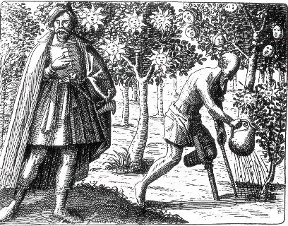
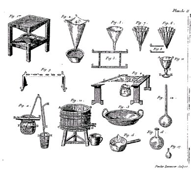
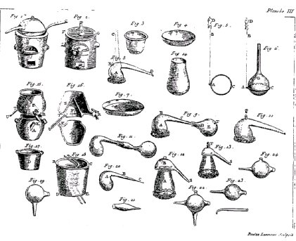
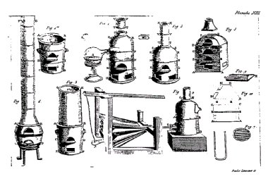
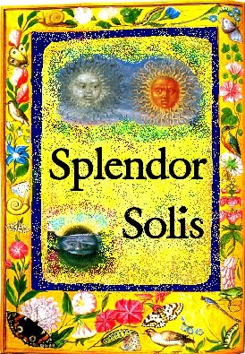
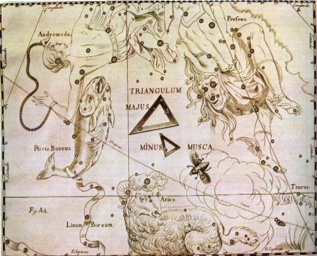
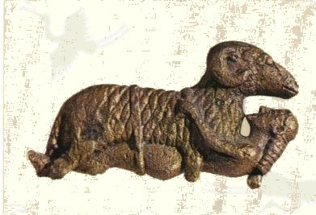
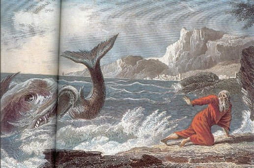
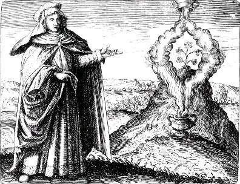

EMBLEMA L.
revu le 9 janvier 2003
Draco mulierem, & haec illum interimit, simulque sanguine perfunduntur.
(Le dragon tue la femme et la femme le dragon ; tous deux sont inondés de sang.1)Du dragon venimeux creuse profond la tombe :
Que la femme l’embrasse en une forte étreinte.
Tandis que cet époux goûte les joies du lit
Elle meurt, et la terre ensemble les recouvre.
Le dragon à son tour est livré à la mort ;
Son corps se teint de sang : vrai chemin de ton œuvre2.
FUGA L
La demeure des dragons se trouve dans les cavernes de la terre, mais celle des hommes est sur la terre et dans l’air qui en est tout proche : ce sont là deux éléments contraires que les philosophes commandent d’unir pour que l’un agisse sur l’autre3. D’autres entendent ceci de la femme, comme Basile dans la Deuxième Clé4 :
« Il n’est pas utile en effet, dit-il, que l’aigle place son nid dans les Alpes, car le froid des neiges ferait mourir ses petits au sommet des montagnes. Mais si tu ajoutes à l’aigle le dragon froid qui a longtemps possédé son habitation dans les pierres et qui sort en rampant des cavernes de la terre, et si tu les places tous deux sur le siège infernal, alors Pluton fera souffler le vent, et il fera jaillir du dragon froid un esprit igné volatil qui, par sa grande chaleur, brûlera les ailes de l’aigle et excitera le bain sudorifique au point que la neige fondra au sommet des montagnes et deviendra eau. Que l’on prépare avec cette eau le bain minéral qui doit procurer au roi fortune et santé ».5
Il est étrange assurément que le dragon froid émette un esprit igné. Cependant l’expérience atteste la véracité de ce fait dans les serpents brûlés qui émettent une flamme empoisonnée atteignant les assistants. Et ce n’est pas pour rien que les dragons gardiens des trésors chimiques sont représentés vomissant des flammes, comme celui de la Toison d’Or6, celui du Jardin des Hespérides7, celui de Cadmus8 et ceux qui leur ressemblent. Ce dragon habite dans les lieux resserrés des pierres souterraines ; il faut le prendre là et le joindre à un aigle ou à une femme, à celle-ci dans un sépulcre, à celui-là, si tu le préfères, dans son nid : car la nature du dragon est, en d’autres circonstances, d’attaquer les œufs de l’aigle et de livrer à l’aigle une guerre meurtrière.
Il est arrivé, au rapport d’écrivains grecs, qu’un dragon ait aimé une jeune fille et partagé sa couche. Qu’y a-t-il donc d’étonnant à ce que les philosophes veuillent que leur dragon doive être renfermé avec une femme dans une caverne ? Greverus unit les dragons rouges et noirs au fond de l’abîme de la montagne, il les brûle par le feu, et, les noirs venant à périr, il dit au gardien de la montagne de les rassembler de partout et de les porter sur la montagne9. Merlin, dans sa Vision, (à moins qu’elle ne soit une fiction) fait mention d’un dragon blanc et d’un dragon rouge. Ces dragons, quels qu’ils soient, qu’il y ait là une femme ou un dragon femelle, agissent l’un sur l’autre jusqu’à ce que tous deux meurent et qu’ils laissent sortir le sang des blessures dont ils sont couverts. On entend ici par dragon l’élément de la terre et du feu et par femme celui de l’air et de l’eau. C’est pourquoi Le Son de la Trompette dit« que le dragon est la matière qui demeure au fond après que l’eau en a été séparée par distillation »10.
Et, citant les paroles d’Hermès :
« L’eau, de l’air qui existe entre le ciel et la terre est la vie de toutes choses. En effet l’eau elle-même résout le corps en esprit, de mort qu’il était le rend vivant et réalise le mariage de l’homme et de la femme. En effet il réalise tout le bienfait de l’art »11.
Et il parle également de la terre en ces termes :
« Et comprends encore que cette terre même que nous foulons n’est pas le véritable élément, mais elle est élémentée par son véritable cinquième élément ; et la cinquième substance élémentaire ne s’éloigne pas de son corps élémenté duquel la terre a été formée »12.
Et peu après :
« Mais au centre de la terre sont la vierge et l’élément véritable que le feu ne pourra brûler. C’est le dragon dont nous parlons, qui s’insinue jusqu’au centre de la terre. Comme la chaleur y est grande, il conçoit en lui une ardeur enflammée par laquelle il brûle la femme ou l’aigle »13.
La femme ou l’aigle est l’eau aérienne ; certains la nomment aigle blanc ou céleste et s’affairent à la réaliser au moyen du Mercure vulgaire ou des sels sublimés, suivant en cela la direction de certains qui sont aveugles dans cet art et font semblant d’être des lynx.
« Mais je te déclare en vérité, dit le comte Bernard dans son Epître, qu’aucune eau ne dissout l’espèce métallique par réduction naturelle, si ce n’est celle qui demeure permanente en matière et en forme, et que les métaux eux mêmes peuvent coaguler à nouveau. »14
Et peu après :
« L’eau ne convient pas aux corps dans les solutions lorsqu’elle ne demeure pas en eux dans les coagulations »15.
Et un peu plus loin :
« Je te déclare en vérité que l’huile qui incère et unit naturellement les natures et introduit naturellement la médecine dans les autres corps à teindre n’est pas composée d’un corps étranger, mais qu’elle l’est seulement à partir des entrailles du corps à dissoudre »16.
Donc une fois que l’on a saisi cela, on comprend l’aigle et la femme, comme aussi le dragon et les secrets de l’art presque entier, secrets que nous avons en ouvrant peut-être trop largement le sein de la nature, exposé et manifesté dans ces pages aux fils de l’enseignement, afin qu’ainsi
GLOIRE SOIT RENDUE A DIEU.
Notes1. C'est l'une des rares fois où Michel Maier parle de la préparation du Mercure ; ce n'est donc certainement pas par hasard qu'il en fait la matière de son dernier emblème. L'emblème montre une scène où l'allégorie est poussée à un rare degré. Nous assistons à des noces singulières, chymiques s'il en est [pour reprendre le titre d'un ouvrage des plus intéressants sur l'Art sacré, les Noces Chymiques, de Christian Rosencreutz, par Jean-Valentin Andreae, Chacornac, 1928 avec un commentaire de Auriger et une notice de Paul Chacornac] qui consacrent le 2ème oeuvre. Cet emblème a été analysé par Lucien Gérardin, dans son Alchimie [Culture, Art, Loisir, Paris, 1972], pp. 246-247. Il a cru y reconnaître la préparation de l'eau forte. C'était finement analysé mais Gérardin ne nous semble pas avoir explicité tout à fait l'exotérisme de l'allégorie. Certes, il nomme Aphrodite comme telle. Mais il passe sous silence ce qui, au premier regard, passe pour un serpent. Cette scène d'étreinte se déroule au milieu de ruines romaines. On peut, comme Gérardin, y voir une allusion au dragon babylonien [le vitriol romain, cf. Atalanta XXV] mais là encore, de notre point de vue, demi vérité. La question qu'il faut poser est la suivante : pourquoi une allégorie sur la préparation de l'acide azotique, alors que celle-ci est connue depuis Geber [1, 2, 3] ? Maier étant un fin cabaliste, c'est autre chose qu'il devait avoir en vue. Reprenons donc les acteurs de cette scène, y compris les figurants pétrés, où l'amour et la mort sont au rendez-vous. Au premier plan, on aperçoit une cavité qui correspond de toute évidence à une fosse, une tombe. S'y trouvent enlacés une femme et un serpent. Mais à y regarder de plus près, nous voyons que ce serpent est ailé : il s'agit donc d'un dragon. Quant à la jeune femme, à cette époque de l'oeuvre, il ne peut s'agir que de Vénus - Aphrodite [cf. laboratoire, 2]. Au second plan, des ruines au sein desquelles un sel fait efflorescence avec facilité : le nitre. Ce n'est pas tout : ces ruines dans un cadre romain contiennent une indication sur la nature du dragon et qui permet de le le qualifier de babylonien. Gérardin avait vu juste sur ce point ; ce dragon qui n'a rien à voir avec le Mercure, est l'hiéroglyphe du vitriol romain, où, à coup sûr, d'une terre vitriolique, d'un guhr d'où se peut puiser l'huile de vitriol d'un côté et le colcothar de l'autre côté. C'est un sel double, comme tant d'autres qui nous occupe dans ces pages. En bref, pour le nommer, ce dragon est Arès, c'est-à-dire Mars, dont le domicile est le Bélier, l'exaltation dans le Capricorne [Atalanta, XLIII], la chute dans le Cancer [Atalanta, XLII], et l'exil dans la Balance [Atalanta, XLI. Ces correspondances ne peuvent se comprendre que par des références hermétiques qui excluent, de notre point de vue, une interprétation astrologique simple].

FIGURE I
(Symbola Aureae Mensae, Michel Maier, 1617 - Héphaïstos, dieu boiteux)La figure I montre qu'il manque un grand absent dans l'emblème : le dieu boiteux Héphaistos. C'est lui, en effet, qui permet d'assurer la liaison entre Arès et Aphrodite. On le voit ici, arrosant d'eau ignée l'arbre correspondant à cette union. Au second plan, se profilent les arbres solaire et lunaire. Mais nous n'avons pas terminé la description de l'emblème. On y remarque des voûtes et des arcades, dont le symbolisme est essentiel à l'alchimie et qui explique pourquoi Fulcanelli avait choisi la cathédrale comme le type même de la demeure philosophale. On y remarque enfin, se profilant au loin, un pont et encore plus loin, deux clochers qui rappellent les motifs curieux de la porte du Jardin, à l'emblème XXVII, là où l'Artiste doit jouer de ruse et de malice pour franchir cette porte du Palais Fermé du Roi [Introïtus]. Or, ces clochers ont une forme spéciale où l'on devine deux pointes de FEU, illustrant la nature spécialement pontique de l'opération que l'alchimiste doit réaliser par l'union d'Arès et d'Aphrodite. Union qui le conduira à obtenir une bonne partie du précieux dissolvant. Parlons à présent des arcades. Leur présence n'est pas innocente. Elles manifestent la double symbolique du carré et du cercle, réunissant ainsi les volumes du cube et de la coupe. L'emblème XXI illustre bien ce que nous avons à l'esprit. On commence par tracer un cercle [EN TO PAN]. On y inscrit un cube qui symbolise les Quatre Eléments [Idée Alchimique, V]. On inscrit ensuite le carré dans un triangle dont la base est commune au cercle et au carré. Ce triangle, c'est lui qui symbolise le ternaire alchimique [Esprit, Corps et âme]. L'opération se termine, par l'inscription du triangle dans un second cercle, bien plus vaste que le premier, dont le centre est opposé au point où le 1er cercle et le carré se confondent. La particularité de ce 2ème cercle est d'être tengant aux deux sommets formant la base du triangle. Ces deux sommets sont l'Âme et le Corps de la Pierre. Seul l'Esprit, le sommet supérieur du triangle, n'est pas tengant au cercle.
2. L'épigramme relate le drame chimique de la préparation de l'eau forte. Nous l'avons évoqué dans une section spéciale. Nous allons y revenir en détail, par le biais du Traité de Chymie de Christophle Glaser [Jean d'Houry, Paris, 1668]. Ce drame se décompose en quatre actes :- acte I : préparation du tartre
- acte II : préparation du vitriol
- acte III : l'affrontement
- acte IV : recueil de l'Arcanum duplicatum.Notez que l'emblème ne fait allusion qu'à l'acte III. Voyons ces différentes parties :
Notons d'abord que tous les sels contenant du potassium, qu'il s'agisse du tartre, du nitre, du gypse, font partie du symbolisme général d'Aphrodite.
Du Tartre.b)- préparation de l'huile de vitriol
Nous ne prétendons pas de traiter du Tartre microcosmique, qui est une matière visqueuse, laquelle se forme dans nos corps y mais bien du tartre du vin, qui n'est autre chose qu'une substance terrestre, laquelle se sépare des parties pures du vin, par l'action de l'esprit fermentatif, & se coagule jusqu'à une dureté de pierre, & est de soi incorruptible ; mais elle peut être réduite par le feu en diverses substances. Or en faisant la description des principales opérations qui se font sur le tartre, nous commencerons par sa purification, laquelle ce fait ou par lotion simplement, ou par dissolution : La première se fait ainsi; mettez le tartre en poudre grossière, sur laquelle vous verserez de l'eau chaude, & l'ayant un peu agitée, l'eau se chargera des impuretés, laquelle il faut verser & y en mettre d'autre, & réitérer la même opération jusqu'à ce que l'eau chaude n'enlève plus d'impureté ; alors séchez ce tartre, & le gardez pour l'usage : La seconde purification est plus parfaite, & est ce qu'on appelle crème ou cristal de tartre, lequel se prépare ainsi : Mettez dix livres de beau tartre de Montpellier pulvérisé grossièrement dans une grande chaudière, & versez par-dessus environ trois bons sceaux d'eau commune, & faites bon feu sous la chaudière, en sorte qu'elle puisse bouillir environ un quart d'heure durant, remuez parfois avec un bâton, & après avoir écumé la dissolution de tartre ; vous la passerez chaudement par des chausses de drap larges par la pointe, & laisserez refroidir & cristalliser ce qui aura passé par la chausse, & tout étant refroidi, ôterez la crème qui surnagera pour la garder, puis verserez l'eau par inclination, & laverez le cristal arrêté au fonds & aux côtés du chaudron, lequel vous trouverez, fort menu dans cette première cristallisation ; Mais pour le rendre plus beau & plus gros, faites le dissoudre de nouveau dans moindre quantité d'eau nette dans une bassine plate, & lui faites prendre quelques boitillons, & étant bien dissout, ôtez doucement la bassine du feu, & la laissez refroidir, & tout étant froid, séparez, de l'eau la crème, & le cristal, & les faites sécher, & vous aurez un tartre bien purifié, lequel serait encore plus beau, & plus diaphane, si la dissolution avait été faite dans une chaudière d'étain fin. [...]

FIGURE II
chausses d'Hipocrate [extrait du Traité Elémentaire de Chimie, Lavoisier, 1789]Distillation de l'esprit & de l'huile de tartre.
Pulvérisez grossièrement six livres de bon tartre, & les mettez dans une cornue de grès, ou de terre lutée, laquelle vous placerez au fourneau de réverbère clos ; & lui adapterez un grand ballon, lutant exactement les jointures, puis faites la distillation par un feu gradué : il en sortira premièrement une eau phlegmatique, puis l'esprit & l'huile mêlés confusément; & lorsqu'il n'en sortira plus rien, & que le récipient commencera à s'éclaircir, cessez le feu, & laissez refroidir les vaisseaux, puis délutez le récipient, & séparez l'esprit de l'huile par un entonnoir garni de papier gris ; l'esprit passera à travers, & l'huile demeurera dans le papier, laquelle vous pouvez mettre dans une fiole, & la garder à part. L'esprit peut être rectifié sur le coral, de la même manière que nous avons dit au Chapitre de la Gomme Ammoniac, enseignants l'entière rectification de son esprit. [...]

FIGURE III
cornues munies de leur appareil [extrait du Traité Elémentaire de Chimie, Lavoisier, 1789]Sel fixe, & huile ou liqueur de tartre par défaillance.
Prenez la masse noire qui reste dans la cornue, après la distillation de l'huile & esprit de tartre, & la calcinez au fourneau de réverbère, dans un pot plat & ouvert, jusqu'à ce qu'elle devienne blanche, puis la laissez refroidir, & la mettez dans une terrine, & versez par-dessus de l'eau chaude à l'éminence de six doigts, & la remuez de temps en temps pendant quelques heures. L'eau se chargera de la substance saline, laquelle il faut verser par inclination, & verser sur le reste encore d'autre eau chaude, & en remettre si souvent, qu'on en ait retiré tout le sel. Filtrez pour lors toutes vos dissolutions, & en faites évaporer toute l'humidité, jusqu'à ce que le sel demeure sec, & blanc comme de la neige, au fonds du vaisseau, lequel vous garderez soigneusement dans un vaisseau bien bouché, car autrement il se résoudrait en liqueur par l'attraction de l'humidité de l'air. Mais si vous en voulez faire la liqueur par défaillance, que l'on appelle improprement l'huile de tartre, mettez en une partie sur un marbre, ou sur quelque vaisseau de verre plat, & le placez à la cave, ou en quelque lieu humide, & il se résoudra en peu de jours en liqueur ;

FIGURE IV
fourneaux [[extrait du Traité Elémentaire de Chimie, Lavoisier, 1789]Tous les sels vitrioliques appartiennent au domaine d'Arès.
On trouve peu de vitriol pur ou simple, si ce n’est celui de Chypre & de Hongrie, celui de Rome & d’Allemagne, sont ordinairement mêlés. Quand on veut en avoir de pur pour l’usage de la Médecine, on le prépare de la manière qui suit. On dissout du vitriol de mars ou de cuivre, dans de l’eau simple, on fait bouillir la dissolution sur le feu, & pendant cela on y met des verges de fer, ce qui fait précipiter le cuivre au fond, d’autant que l’acide qui est dans le vitriol quitte le cuivre pour s’attacher au mars. On a par ce moyen un vitriol de mars allez pur.c)- l'affrontement :
On calcine le vitriol en blancheur pour le distiller, & il sort en premier lieu un phlegme qu’on appelle autrement rosée de vitriol : & quand la liqueur devient acide on augmente le feu, & il se forme des nuages qui se coagulent & forment l’esprit de vitriol. L’huile de vitriol sort la dernière, & termine la distillation ; l’huile & l’esprit de vitriol ne différent que par le plus ou moins d’acidité. L’huile qui souffre la dernière violence du feu, enlève avec soi des particules métalliques, ce qui la rend grossière & obscure, & l’esprit est mêlé avec plus de phlegme ou d’eau, & par cette raison il est moins acide que l’huile, dont l’acide est concentré, & qui a besoin d’un feu plus violent. Une preuve de ceci, c’est que si on rectifie exactement l’esprit de vitriol, & qu’on en tire tout le phlegme à chaleur lente, il aura la même acrimonie & la même consistance que l’huile ; au contraire si on verse de l’eau simple distillée sur l’huile corrosive de vitriol, & qu’on distille le tout pour rectifier l’huile comme on a fait l’esprit de vitriol, l’huile prendra la forme de l’esprit.Magistère de tartre, ou tartre vitriolé.d)- recueil de l'Arcanum : cf. section du tartre vitriolé.
Prenez huit onces de liqueur de sel de tartre faite par défaillance, laquelle soit claire comme de l'eau de fontaine, mettez-la dans un grand matras à long col, & versez dessus goutte à goutte de l'huile de vitriol, jusqu'à ce qu'il ne se fasse plus d'ébullition, qui est la proportion qu'il faut observer, car il en faut mettre jusqu'à ce que l'huile de vitriol ne trouve plus rien qui puisse agir contre son acidité, videz alors dans une écuelle de grès ce mélange, lequel sera à demi congelé, & s'il reste quelque chose dans le matras, délayez le avec un peu d'eau de pluie distillée, & le mêlez avec le reste dans l'écuelle, laquelle vous placerez au fourneau de sable, & ferez évaporer toute l'humidité, il vous reliera un sel blanc comme de la neige, lequel il faut conserver dans un vaisseau de verre bien bouché.On comprend que dans ces opérations, à la fois Aphrodite et Arès se consument et ce sang évoqué au dernier vers de l'épigramme doit être quelque safran de Mars qui reste de l'opération.
3. Remarquez que Maier cite l'AIR et la TERRE comme des éléments contraires. Revoyez notre zodiaque réformé : vous verrez que nous avons des vues identiques à celles de Maier. Il est logique que l'EAU soit opposée au FEU, comme l'AIR l'est de la TERRE.
4. cf. Douze clefs de Philosophie. La Clef II est consacrée au Mercure philosophique.
5. C'est la préparation de l'acide azotique. L'alchimiste se servira du Caput mortuum. L'aigle est assimilé à Aphrodite et le dragon à l'acide vitriolique.
6. cf. Toyson d'Or de Salomon Trsimosin.

FIGURE V
(frontispice du Splendor Solis, alias Toyson d'Or - montage d'Alain Mauranne)Nous reprenons en introduction à ce traité le mythe de Jason. Remarquez que nous en avons dit quelques mots dans l'analyse des emblèmes de Maier [emblèmes I - XIII - XIX - XXII - XXIII - XXV - XXXII - XXXVI - XXXVII - XXXVIII - XLIII - XLIV - XLVII - XLIX], en dehors des autres sections.
7. sur le Jardin des Hespérides, voyez surtout l'introduction à l'Atalanta fugiens, la section Matière et les dix derniers chapitres de l'Atalanta où le thème est omni-présent.
8. sur Cadmus et le dragon, nombreux passages dans les emblèmes.
9. Il est temps de parler à présent du symbolisme du signe du Bélier. Sa nature est celle du FEU. Le Bélier est le domicile diurne de Mars, le lieu d'exaltation du Soleil [qui a fait tomber Newton dans l'embûche de l'antimoine, cf. symbolisme général]. Vénus y est en exil, ce qu'on peut comprendre au vu des notes 1 et 2. Le 0° du Bélier marque l'équinoxe du Printemps, époque canonique pour débuter l'oeuvre, mais nous avons vu ailleurs que tout cela devait être revu par la cabale. Fougue, générosité, confinant à l'obstination, voilà des attributs que l'on reconnaît au Bélier et qui distinguent bien Arès. On en a fait la figure du Bélier Amon, divinité de l'AIR et de la fécondité, évoqué ailleurs ; et renconduit sous le nom de Jupiter-Amon. De même l'Hermès - Kriophore [le porteur de Bélier]. D'autres rites faisaient adorer par les doriens Apollon - Karneiros, dieu du Bélier, célèbre à Sparte pour écarter les animaux sauvages, protéger les troupeaux, éduquer les bouviers. Dans l'optique où nous voyons Arès, on ne peut manquer, en outre, de voir dans le Bélier une variante de l'Agneau de Dieu qui est porté sur la croix, dans une sublimation de la symbolique du feu [c'est cet agneau que l'on voit dans le retable d'Issenheim à la scène de la Crucifixion]. Dans le ciel firmamental, le Bélier est associé à une histoire assez compliquée du découpage de petites constellations. Il est associé, en effet, à la constellation du Triangle, ce qui n'est nullement étonnant pour un cabaliste. Les anciens Hébreux l'appelaient le Salish [nom d'un instrument de musique de forme triangulaire]. Au XVIIe siècle, Hevelius voulut y introduire un second triangle, qu'il appela « mineur ». Rappelons que la constellation du Triangle fut séparée de celle du Bélier par deux nouvelles formations dont la vie fut éphémère : la Mouche et l'Abeille, qui apparaissaient ensemble sur de nombreuses cartes du ciel et qui figurent dans l'Atlas de Bode. Précisons que la Mouche fut dessinée en 1624 par Bartsch, le gendre de Kepler, et qu'elle apparaît transformée en fleur de lys sur le globe que Coronelli offrit en 1690 au roi Louis XIV. Mais ces constellations ont aujourd'hui disparu, ce qui est dommage car elles expriment plusieurs points de symbolisme de l'Art sacré. Nous ne parlerons pas de l'abeille, associée à la ruche. Nous avons vu dans la section des blasons alchimiques, que la mouche, ou du moins une sorte de mouche, était liée au figuier et au palmier d'une manière qui ne laisse pas d'être, par analogie, curieuse. On connaît aussi l'anecdote de Tollius qui ne se livrait pas à une expérience alchimique sans d'abord s'être bien persuadé qu'aucune mouche ne volait dans la pièce, de peur qu'elle vienne à éventer des secrets bien gardés...La mouche, au sens figuré, représente aussi Arès, c'est-à-dire l'homme agile, fébrile, revendicateur, « qui prend la mouche ».

FIGURE VI
(le Bélier, les triangles, la Mouche, Andromède et Persée - atlas de Hevelius)- le premier décan présente un aspect de robustesse et d'âpreté dans le paysage ; ces pics arides et dénudés, ce château vigoureux reposant sur des assises de roc inébranlable donnent une idée de force et de puissance. A l'évidence, ce décan s'applique à Arès, fils de Zeus et d'Héra. Il n'est pas toujours brillant dans ses exploits ; nous avons vu ailleurs que Diomède l'avait blessé à la cuisse et que Héphaistos l'avait mis en situation ridicule, en l'enserrant dans un filet magique, avec Aphrodite. Passage obligé dans l'oeuvre ; il est comme cela un certain nombre de fatalités. Remarquons, toutefois, un aspect du Bélier qui semble avoir échappé aux hermétistes : la possibilité de s'en servir par ruse. Voici Ulysse [figure VII], attaché sous un bélier pour échapper au Cyclope Polyphème, aveuglé la nuit précédente par Odysseus et ses compagnons, d'un pieu porté au rouge dans l'âtre du géant. Pour revenir à Arès, bien que symbolisant la force brutale, l'Artiste peut s'en faire un allié puissant, s'il prend intérêt au soutien que lui apportera la Justice dans l'opération du tartre.
- le deuxième décan représente Andromède sur son rocher. D'une féminité délicieuse et cependant fière, cette héroïne presque divine allie la Grâce sévère et la Beauté ; elle est enchaînée par des forces contraires et livrée sur l'image, à un monstre marin. Elle paraît sur le point de succomber, lorsqu'en un vol hardi, dans l'or du ciel, paraît sur un cheval ailé, le secours providentiel et inattendu. Ce décan serait celui qui annonce à l'Artiste maintes embûches à venir, d'où ne pourront le tirer qu'un âpre travail, au milieu d'une solitude totale : c'est là, dans ce désert de sentiments, que le hasard, la Providence en un mot, pourra l'aider, pourvu que lui-même n'ait rien laissé à l'aventure dans sa quête de la perfection de la matière. Cette parabole est tirée d'un fable. Cassiopée, femme de Céphée, roi d'Ethiopie, commit l'imprudence de vanter la beauté de sa fille Andromède et de prétendre que sa fille surpassait celle des Néréïdes. Poséïdon, qui s'irrite décidément pour un rien, envoya un monstre marin ravager la contrée. Lorsque Céphée consulta l'oracle d'Ammon, il lui fut répondu que son royaume serait délivré de ce fléau si Andromède était exposée au dieu à un rocher. Elle s'attendait à être dévorée mais Persée, débarqua sur la côte d'Ethiopie et secourut Andromède en tuant le monstre. Au terme de divers avatars, Persée épousa Andromède, dont il eut Sthénélos et Electryon. Que signifie cette légende, qui associe ainsi Céphée, Cassiopée, Andromède et Persée ? On sait que Persée est l'agent qui, en décapitant Méduse, permet l'obtention de deux substances, dont l'une est symbolisée par Pégase [principe mercuriel, volatil] et l'autre par Chysaor [principe soufré]. Andromède [Andromeda] peut être décomposée en anhr [époux, mari, celui qui engendre] et medoma [= medw : régler, contenir dans une juste mesure]. Là-dessus, Pernety écrit, dans son Dictionnaire :Andromède. Fille de Cephée et de Cassiopée, fut exposée à un monstre marin, et délivrée par Persée qui l’épousa. La Fable feint que tout cela se passa en Ethiopie, parce que les Philosophes emploient l’allégorie des dragons qui combattent entre eux, ou qui sont vaincus par des Héros, pour exprimer le combat du fixe et du volatil dans le temps que la dissolution de la matière la rend noire comme de la poix fondue. Voyez les Fables Egypt. et Grecq. liv. 3, chap. 14, § 3.Rien de bien intéressant. Pernety ne dit rien sur les enfants de Persée et d'Andromède. Sthénélos [SqeneloV], qui peut être traduit comme le « fort » et Electryon [Hlektruwn], qui se rapproche du Rebis par hlektron [ambre jaune, métal formé d'argent et d'or]. Il est bien difficile de dégager une cohérence de ce fatras. On peut dire que le deuxième décan serait celui où a lieu l'union entre Arès et Aphrodite, qui serait symbolisée par la lutte entre le monstre et Andromède. Le mot medw entraîne l'idée de justice, c'est-à-dire de faire la part entre l'acide et la base, en sorte qu'il n'y ait pas excès de l'un ou de l'autre, faute de quoi l'Arcanum duplicatum ne serait pas un sel neutre, mais par exemple, en cas d'excès d'Arès, du sulfate acide de potasse, qu'il faudrait porter au feu pour le réduire. Andromède, en ce sens, pourrait éventuellement être le symbole de la justesse dans le poids à accorder au tartre [ou d'ailleurs au nitre] d'un côté, et d'un autre côté, à l'acide vitriolique. Quant aux enfants du couple Persée et Andromède, il seront promis à un riche avenir par leur progéniture, notamment Sthénélos qui aura, de Nicippé, Alcinoé [Alkinoh, avec alkh = force agissante et nooV = intelligence ; il s'agit du Mercure], Méduse [Medousa, où l'on note un trait d'union, par medw, avec Andromède], Eurysthée [cf. Douze Travaux d'Hercule ; Eurysthée symbolise l'oeuvre même, c'est-à-dire les épreuves imposées à l'Artiste] et Iphis [IjiV, proche de iji = avec force, courage]. Notons l'incohérence de la fable puisque Méduse... est tuée par Persée. Persée aurait donc tué sa propre fille... Dans l'ensemble, nous le répétons, le parallèle entre le magistère et ce 2ème décan est des plus intriqués à débrouiller ; on note comme un fil conducteur, cependant, entre les divers acteurs : la force qui semble issue de celle d'Arès alors que la tempérance semble être apportée par tout ce qui ressort du côté d'Aphrodite. Comme le Taureau, le Bélier ne se laisse pas dominer aisément.

FIGURE VII
(ornement d'un trépied de bronze du début de l'archaïsme - Delphes : le Bélier protégeant Ulysse)- le troisième décan du Bélier montre un mammifère marin qui ressemble à la baleine, qui semble posséder sous son apparence massive une grande vélocité. La rapidité de ses déplacements jointe à l'incertitude de sa direction rend sa mobilité dangereuse. D'un coup de queue brutal et inconscient, le monstre frappe au hasard et a tôt fait d'envoyer dans le néant les souffleurs qui ne peuvent, à cette époque de l'oeuvre, soit maîtriser leur feu, soit qui font des erreurs dans le poids à attribuer aux matières. Ce décan contrarie - à ce qu'il paraît - la fécondité et il donne un esprit lunatique [c'est-à-dire dont la ponticité est telle que l'on doit mettre en doute que l'Artiste ait réalisé la préparation d'un sel neutre]. Là encore, on devine les traits d'Arès sous les traits sibyllins de cet animal. La constellation de la Baleine [Cetus] est imposante, au point que sa taille n'est dépassée que par la Vierge, l'Hydre et la Grande Ourse. Il faut voir dans cette baleine le monstre dont il est question au 2ème décan. Eudoxe, Aratos et Ptolémée donnaient à cette zone du ciel le nom de ketos [khtoV]. Sur les gravures classiques, le monstre n'a d'ailleurs que peu de rapport avec l'énorme cétacé, et résulte plutôt de l'imagination déchaînée des dessinateurs qui s'attachaient toujours à représenter les monstres les plus terrifiants et les plus invraisemblables. L'intérêt de la baleine, au plan de la cabale hermétique, est cependant avéré. D'abord, on connaît la déesse marine Khtw [Céto], fille de Pontos et de Gaïa, qui épousa son propre frère, Phorcys. elle mit au monde les Gorgones, les Grées, le dragon qui gardait les pommes des Hespérides [le dragon Ladon] et les Hespérides elles-mêmes [rappelons en outre l'épithète du cheval de Troie, qui se rattache à Céto : khtweiV, qui signifie caverneux]. Tout, dans ces fables qui se succèdent, nous indique un futur, qui n'est pas forcément très proche, et qui donne des indications sur des phases à venir de l'oeuvre. Tout le monde connaît, par ailleurs, la fable de Jonas et de la baleine. Fulcanelli y fait allusion à la fin du chapitre sur la Salamandre de Lisieux, l'un des plus importants de la trilogie, à notre sens :
« Notre Hercule pourrait ainsi vouloir représenter Jonas, ce petit prophète miraculeusement sauvé après avoir demeuré trois jours dans le ventre d'une baleine. Pour nous, Jonas est l'image sacrée du Lion vert des Sages, lequel reste trois jours philosophiques enfermé dans la substance mère, avant de s'élever par sublimation et paraître sur les eaux. » [Demeures Philosophales, I, p. 296]

FIGURE VIII
(Jonas et la baleine)On sait que refusant d'obéir à Dieu, Jonas se réfugia sur un navire, qu'une tempête mit en péril. Conscient d‘avoir provoquer la colère divine, Jonas demanda qu'on le jeta à la mer. Alors qu'il s'enfonçait dans l'abime, une baleine l'avala. Jonas demeura dans ses entrailles trois jours entiers. Il se repentit et pria Dieu, qui ordonna à la baleine de le ramener sur la terre ferme. Dans cette épisode biblique, le ventre de la baleine fait fonction de lieu de passage entre deux mondes
ou deux états de l'esprit. Le Jonas qui sort de la baleine est différent de celui qui y est entré. Il s‘est produit une métamorphose. Le séjour du héros dans le ventre du cétacé correspond à la mort initiatique [prise dans le sens de dissolution], et sa sortie représente la seconde naissance de l'homme, la naissance sprirituelle [c'est-à-dire le passage de l'Âme à un état supérieur, cf. Atalanta, XLIX].[sites consultés sur Jonas: http://www.multimania.com/neigesl/poissonfevrier.htm - http://membres.lycos.fr/grandblanc/quiaavalejonas1.htm]
Jonas, dans cette affaire, semble être le symbole du Soufre qui disparaît, puis reparaît, transfiguré. Le nom même de Jonas est chargé de cabale [la racine ion rappelle la violette]. Et celui de la baleine s'apparente au royaume d'Hadès, c'est-à-dire à la bouche d'ombre. Dans ce mythe de Jonas, la baleine est l'arche de Noë qui vogue sur les eaux du Déluge.
10. le produit de cette distillation est du foie de soufre, c'est-à-dire du polysulfure de potassium qui s'apparente à l'eau divine de Zosime [cf. réincrudation].
11. Il s'agit du Mercure, pris en tant qu'eau permanente, assurant la transition entre le ciel [le Soufre sublimé] et la Terre.
12. ce 5ème élément est la quintessence, ce que Fulcanelli appelle le rayon igné solaire qu'il faut savoir piéger dans le corps de la Pierre.
13. Il faut comprendre qu'il s'agit ici du premier dragon, celui qui est couvert d'écailles et qui engendre la terre feuillée. Voyez ce que nous disons de la Vierge à l'Atalanta, XLVII. L'élément que le feu ne peut brûler est le SEL incombustible, dont l'hiéroglyphe est la salamandre.
14. C'est nommer une substance qui ne peut être qu'un fondant, cf. Mercure.
15. Remarquable réflexion. Il est fait allusion au fait que l'eau permanente étant de l'eau salée, si l'on peut dire et en s'évaporant, va laisser des résidus. C'est dans ces résidus mercuriels que l'on trouvera des géodes au sein desquelles apparaîtra l'escarboucle des Sages.
16. Moyen pour dire que l'eau qui sert de véhicule constitue en même temps, pour une part, la matière même de la Pierre.

FIGURE IX
(Symbola Aureae Mensae, Michel Maier, 1617)Ce qui est en haut est comme ce qui est en bas, comme l'expriment les vapeurs qui diffusent dans ces coupes, entre le ciel et la terre. Les nuées laissent un opercule au travers duquel on aperçoit une plante fleurie, avec cinq fleurs, au sommet d'un mont, signe de la conjonction de la matière. Voyez ici la Table d'Emeraude. Pour parler une dernière fois de la baleine, il faut signaler que du point de vue de la cosmogonie, certaines traditions rapportent que la terre, une fois créée, se balançait sur les eaux. Dieu fit alors descendre un ange qui souleva la terre sur ses épaules [allusion à Atlas]. Pour que ses pieds puissent se poser, Dieu créa un rocher vert, reposant lui-même sur le dos et les cornes d'un taureau qui a quarante mille têtes et dont les pattes sont posées sur une immense baleine. Etant donné que la terre repose sur l'ange, l'ange sur le rocher, le taureau sur la baleine [ce que le hasard de la distribution des constellations rend effectif], la baleine sur l'eau, l'eau sur l'air et l'air sur les ténèbres, et que toute cette structure dépend des mouvements de la baleine, on comprend que celle-ci, comme l'éléphant, la tortue ou le crocodile, soit un symbole de support du monde, une sorte de cosmophore.